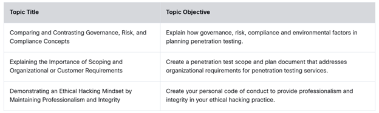
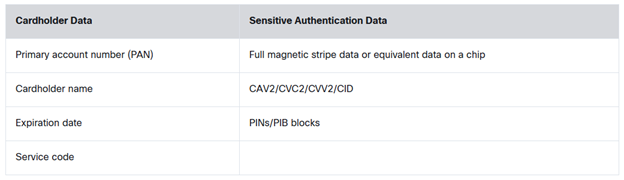
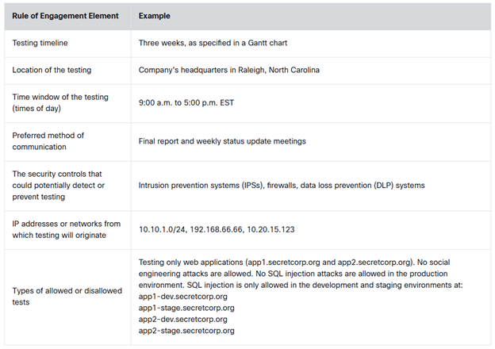
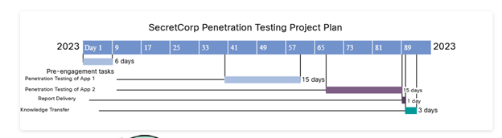
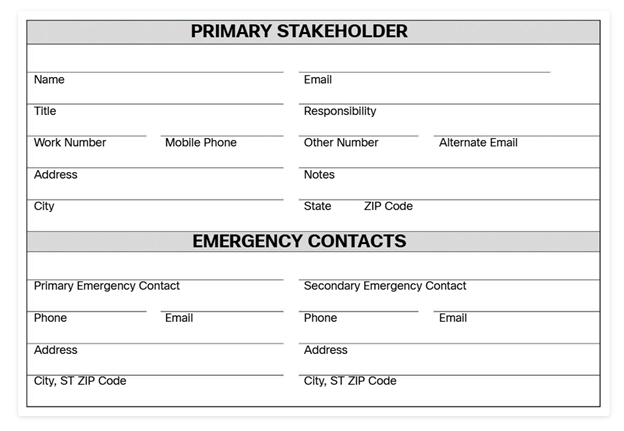
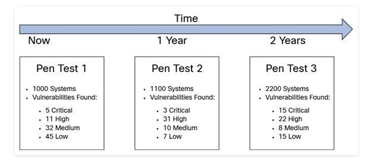

Planning and Scoping a Penetration Testing Assessment
2.0 Introduction
2.0.1 Why Should I Take This Module?
We are beginning our engagement with our new client, Pixel Paradise. Remember them? We need to work on the scope and plan of our engagement with them for their approval. Once we have agreement we can generate our statement of work and start the project. It is important that you understand this part of our business.
Many things can go wrong if we do not scope and plan our penetration testing engagement appropriately. In particular, we need to be aware of local laws and legal concepts related to penetration testing. In this module, you will learn the importance of good planning and scoping in a penetration testing or ethical hacking engagement. You will learn about several key legal concepts and the different aspects of compliance-based security assessments. Finally, you will work to develop the mindset and ethics of a professional ethical hacker, which is an essential requirement for working at Protego.

Many things can go wrong if you do not scope and plan a penetration testing engagement appropriately. In particular, you need to be aware of local laws and legal concepts related to penetration testing. In this module, you will learn the importance of good planning and scoping in a penetration testing or ethical hacking engagement. You will learn about several key legal concepts and the different aspects of compliance-based assessments.
2.0.2 What Will I Learn in This Module?
Module Title: Planning and Scoping a Penetration Testing Assessment
Module Objective: Create penetration testing preliminary documents.

2.1 Comparing and Contrasting Governance, Risk, and Compliance Concepts
2.1.1 Overview
Part of our security assessment service is the evaluation of Pixel Paradise's adherence to relevant compliance frameworks. Failure to meet compliance requirements can result in heavy penalties, and it is possible that our client will be banned from doing business in certain countries for failure to comply. That is a lot of responsibility!
Pixel Paradise collects customer information as part of its business in the EU and US and also handles credit card transactions for purchases made at its online store front. This means that Pixel Paradise must comply with the GDPR and PCI DSS frameworks, among others.
And while we are talking about legal issues, you need to learn about features of our customer agreements such as contracts, service-level agreements, confidentiality requirements, and master service agreements or statements of work. You need to understand these agreements and how they affect our practice.

One of the most important phases (if not the most important) of any penetration testing engagement is the planning and preparation phase. During this phase, you clearly scope your engagement. If you do not scope correctly, you will definitely run into issues with your client (if you work as a consultant) or with your boss (if you are part of a corporate red team), and you might even encounter legal problems.
A red team is a group of cybersecurity experts and penetration testers hired by an organization to mimic a real threat actor by exposing vulnerabilities and risks regarding technology, people, and physical security. A blue team is a corporate security team that defends the organization against cybersecurity threats (that is, the security operation center analysts, computer security incident response teams [CSIRTs], information security [InfoSec] teams, and others).
The following are some key concepts you must address and understand in the planning and preparation phase:
- The target audience
- The rules of engagement
- The communication escalation path and communication channels
- The available resources and requirements
- The overall budget for the engagement
- Any specific disclaimers
- Any technical constraints
- The resources available to you as a penetration tester
The following sections cover these key concepts in detail.
2.1.2 Regulatory Compliance Considerations
You must be familiar with several regulatory compliance considerations in order to be successful in ethical hacking and penetration testing — not only to complete compliance-based assessments but also to understand what regulations may affect you and your client.
Let's start to review these considerations by assuming that you are hired to perform a compliance-based assessment. In that scenario, you (the penetration tester) are hired to verify and audit the security posture of the organization and to make sure the organization is compliant with specific regulations, such as the following.
PCI DSS
The Payment Card Industry Data Security Standard (PCI DSS) regulation aims to secure the processing of credit card payments and other types of digital payments. PCI DSS specifications, documentation, and resources can be accessed at https://www.pcisecuritystandards.org.
HIPAA
The original intent of the Health Insurance Portability and Accountability Act of 1996 (HIPAA) regulation was to simplify and standardize healthcare administrative processes. Administrative simplification called for the transition from paper records and transactions to electronic records and transactions. The U.S. Department of Health and Human Services (HHS) was instructed to develop and publish standards to protect an individual's electronic health information while permitting appropriate access and use of that information by healthcare providers and other entities. Information about HIPAA can be obtained from https://www.cdc.gov/phlp/publications/topic/hipaa.html.
FedRAMP
The U.S. federal government uses the Federal Risk and Authorization Management Program (FedRAMP) standard to authorize the use of cloud service offerings. You can obtain information about FedRAMP at https://www.fedramp.gov.
Most of these regulations and specifications require the regulated company to hire third-party penetration testing firms to make sure they are compliant and to ensure that their security posture is acceptable. You must be familiar with these regulations if you are hired to perform penetration testing to verify compliance and the overall security posture of the organization. Many of these standards provide checklists of the items that should be assessed during a penetration testing engagement.
You must also become familiar with different privacy-related regulations, such as the General Data Protection Regulation (GDPR). GDPR includes strict rules around the processing of data and privacy. One of the GDPR's main goals is to strengthen and unify data protection for individuals within the European Union (EU), while addressing the export of personal data outside the EU. In short, the primary objective of the GDPR is to give citizens control of their personal data. You can obtain additional information about GDPR at https://gdpr-info.eu.
You should become aware of any export control restrictions that might be present in the country where a penetration test will be performed. For example, there might be tools, software, and hardware that cannot be exported outside the country (for example, certain cryptographic software or encryption technologies). For several years, more than 40 countries have been negotiating export controls under the Wassenaar Arrangement. The Wassenaar Arrangement was established for export control of conventional arms and dual-use goods and technologies. Specific security tools (software and hardware) can be considered "arms" and can be controlled and restricted by certain national laws in various countries.

In order to become familiar with the rules related to completing a compliance-based assessment, you should become familiar with some of the key underlying regulations, such as those described in the following sections.
Regulations in the Financial Sector
Financial services institutions such as banks, credit unions, and lending institutions provide an array of solutions and financial instruments. You might think that money is their most valuable asset, but in reality, customer and transactional information is the heart of their business. Financial assets are material and can be replaced. Protection of customer information is necessary to establish and maintain trust between a financial institution and the community it serves. More specifically, institutions have a responsibility to safeguard the privacy of individual consumers and protect them from harm, including fraud and identity theft. On a broader scale, the industry is responsible for maintaining the critical infrastructure of the nation's financial services.
The following are a few examples of regulations applicable to the financial sector:
- Title V, Section 501(b) of the Gramm-Leach-Bliley Act (GLBA) and the corresponding interagency guidelines
- The Federal Financial Institutions Examination Council (FFIEC)
- The Federal Deposit Insurance Corporation (FDIC) Safeguards Act and Financial Institutions Letters (FILs)
- The New York Department of Financial Services Cybersecurity Regulation (NY DFS Cybersecurity Regulation; 23 NYCRR Part 500)
Compliance with some regulations, such as NYCRR and GLBA, is mandatory.
GLBA defines a financial institution as "any institution the business of which is significantly engaged in financial activities as described in Section 4(k) of the Bank Holding Company Act (12 U.S.C. § 1843(k))". GLBA applies to all financial services organizations, regardless of size. This definition is important to understand because these financial institutions include many companies that are not traditionally considered to be financial institutions, including the following:
- Check-cashing businesses
- Payday lenders
- Mortgage brokers
- Nonbank lenders (for example, automobile dealers providing financial services)
- Technology vendors providing loans to clients
- Educational institutions providing financial aid
- Debt collectors
- Real estate settlement service providers
- Personal property or real estate appraisers
- Retailers that issue branded credit cards
- Professional tax preparers
- Courier services
The law also applies to companies that receive information about customers of other financial institutions, including credit reporting agencies and ATM operators.
The Federal Trade Commission (FTC) is responsible for enforcing GLBA as it pertains to financial firms that are not covered by federal banking agencies, the Securities and Exchange Commission (SEC), the Commodity Futures Trading Commission (CFTC), and state insurance authorities, which include tax preparers, debt collectors, loan brokers, real estate appraisers, and nonbank mortgage lenders. GLBA mandates that financial organizations undergo periodic penetration testing in their infrastructure. Additional information about the GLBA can be obtained at https://www.ftc.gov/tips-advice/business-center/privacy-and-security/gramm-leach-bliley-act.
Another example is the NY DFS Cybersecurity Regulation. Section 500.05 of this regulation requires the covered entity to perform security penetration testing and vulnerability assessments on an ongoing basis. The cybersecurity program needs to include monitoring and testing, developed in accordance with the covered entity's risk assessment, which is designed to assess the effectiveness of the covered entity's cybersecurity program. The regulation dictates that "the monitoring and testing shall include continuous monitoring or periodic penetration testing and vulnerability assessments." The organization must conduct an annual security penetration testing and a biannual vulnerability assessment. The NY DFS Cybersecurity Regulation can be accessed at https://www.dfs.ny.gov/industry_guidance/cybersecurity.
Regulations in the Healthcare Sector
On February 20, 2003, the Security Standards for the Protection of Electronic Protected Health Information, known as the HIPAA Security Rule, was published. The Security Rule requires technical and nontechnical safeguards to protect electronic health information. The corresponding HIPAA Security Enforcement Final Rule was issued on February 16, 2006. Since then, the following legislation has modified and expanded the scope and requirements of the Security Rule:
- The 2009 Health Information Technology for Economic and Clinical Health Act (known as the HITECH Act)
- The 2009 Breach Notification Rule
- The 2013 Modifications to the HIPAA Privacy, Security, Enforcement, and Breach Notification Rules under the HITECH Act and the Genetic Information Nondiscrimination Act; Other Modifications to the HIPAA Rules (known as the Omnibus Rule)
HHS has published additional cybersecurity guidance to help healthcare professionals defend against security vulnerabilities, ransomware, and modern cybersecurity threats. See https://www.hhs.gov/hipaa/for-professionals/security/guidance/cybersecurity/index.html.
The HIPAA Security Rule focuses on safeguarding electronic protected health information (ePHI), which is defined as individually identifiable health information (IIHI) that is stored, processed, or transmitted electronically. The HIPAA Security Rule applies to covered entities and business associates. Covered entities include healthcare providers, health plans, healthcare clearinghouses, and certain business associates.
Healthcare Provider
A healthcare provider is a person or an organization that provides patient or medical services, such as doctors, clinics, hospitals, and outpatient services; counseling; nursing home and hospice services; pharmacy services; medical diagnostic and imaging services; and durable medical equipment.
Health Plan
A health plan is an entity that provides payment for medical services, such as health insurance companies, HMOs, government health plans, or government programs that pay for healthcare, such as Medicare, Medicaid, military, and veterans' programs.
Healthcare Clearinghouse
A healthcare clearinghouse is an entity that processes nonstandard health information it receives from another entity into a standard format.
Business Associates
Business associates were initially defined as persons or organizations that perform certain functions or activities involving the use or disclosure of personal health information (PHI) on behalf of, or provide services to, a covered entity. Business associate services include legal, actuarial, accounting, consulting, data aggregation, management, administrative, accreditation, and financial services. Subsequent legislation expanded the definition of a business associate to a person or an entity that creates, receives, maintains, transmits, accesses, or has the potential to access PHI to perform certain functions or activities on behalf of a covered entity.
HHS has published HIPAA Security Rule guidance material at https://www.hhs.gov/hipaa/for-professionals/security/guidance/index.html.
Payment Card Industry Data Security Standard (PCI DSS)
In order to protect cardholders against misuse of their personal information and to minimize payment card channel losses, the major payment card brands (Visa, MasterCard, Discover, and American Express) formed the Payment Card Industry Security Standards Council (PCI SSC) and developed the Payment Card Industry Data Security Standard (PCI DSS). The latest version of the standard and collateral documentation can be obtained at https://www.pcisecuritystandards.org.
PCI DSS must be adopted by any organization that transmits, processes, or stores payment card data or that directly or indirectly affects the security of cardholder data. Any organization that leverages a third party to manage cardholder data has the full responsibility of ensuring that this third party is compliant with PCI DSS. The payment card brands can levy fines and penalties against organizations that do not comply with the requirements and/or can revoke their authorization to accept payment cards.
Before we proceed with details about how to protect cardholder data and guidance on how to perform penetration testing in PCI environments, we must define several key terms that are used in this module and are defined by the PCI SSC at https://www.pcisecuritystandards.org/documents/PCI_DSS_Glossary_v3-2.pdf.
Acquirer
Also referred to as an "acquiring bank" or an "acquiring financial institution," an entity that initiates and maintains relationships with merchants for the acceptance of payment cards.
ASV (approved scanning vendor)
An organization approved by the PCI SSC to conduct external vulnerability scanning services.
Merchant
For the purposes of PCI DSS, an entity that accepts payment cards bearing the logos of any of the members of PCI SSC (American Express, Discover, MasterCard, or Visa) as payment for goods and/or services. Note that a merchant that accepts payment cards as payment for goods and/or services can also be a service provider, if the services sold result in storing, processing, or transmitting cardholder data on behalf of other merchants or service providers. For example, an ISP is a merchant that accepts payment cards for monthly service.
PAN (primary account number)
A payment card number that is up to 19 digits long.
Payment Brand
Brands such as Visa, MasterCard, Amex, or Discover.
PCI Forensic Investigator (PFI)
A person trained and certified to investigate and contain information about cybersecurity incidents and breaches involving cardholder data.
Qualified Security Assessor (QSA)
An individual trained and certified to carry out PCI DSS compliance assessments.
Service Provider
A business entity that is not a payment brand and that is directly involved in the processing, storage, or transmission of cardholder data. This includes companies that provide services that control or could impact the security of cardholder data, such as managed service providers that provide managed firewalls, intrusion detection and other services, and hosting providers and other entities. Entities such as telecommunications companies that only provide communication links without access to the application layer of the communication link are excluded.
To counter the potential for staggering losses, the payment card brands contractually require that all organizations that store, process, or transmit cardholder data and/or sensitive authentication data comply with PCI DSS. PCI DSS requirements apply to all system components where account data is stored, processed, or transmitted.
As shown in Table 2-2, account data consists of cardholder data as well as sensitive authentication data. A system component is any network component, server, or application that is included in, or connected to, the cardholder data environment. The cardholder data environment is defined as the people, processes, and technology that handle cardholder data or sensitive authentication data.

The PAN is the defining factor in the applicability of PCI DSS requirements. PCI DSS requirements apply if the PAN is stored, processed, or transmitted. If the PAN is not stored, processed, or transmitted, PCI DSS requirements do not apply. If cardholder name, service code, and/or expiration date are stored, processed, or transmitted with the PAN or are otherwise present in the cardholder data environment, they too must be protected. Per the standards, the PAN must be stored in an unreadable (encrypted) format. Sensitive authentication data may never be stored post-authorization, even if encrypted.
The Luhn algorithm, or Luhn formula, is an industry algorithm used to validate different identification numbers, including credit card numbers, International Mobile Equipment Identity (IMEI) numbers, national provider identifier numbers in the United States, Canadian Social Insurance Numbers, and more. The Luhn algorithm, created by Hans Peter Luhn in 1954, is now in the public domain.
Most credit cards and many government organizations use the Luhn algorithm to validate numbers. The Luhn algorithm is based on the principle of modulo arithmetic and digital roots. It uses modulo-10 mathematics.
The following are the typical elements on the front of a credit card:
- Embedded microchip
- PAN
- Expiration date
- Cardholder name
The microchip contains the same information as the magnetic stripe. Most non-U.S. cards have a microchip instead of a magnetic stripe. Some U.S. cards have both for international acceptance.
The following are the typical elements on the back of a credit card:
- Magnetic stripe (mag stripe): The magnetic stripe contains encoded data required to authenticate, authorize, and process transactions.
- CAV2/CID/CVC2/CVV2: All these abbreviations are names for card security codes for the different payment brands.
The PCI SSC website provides great guidance on the requirements for penetration testing. See https://www.pcisecuritystandards.org.
Key Technical Elements in Regulations You Should Consider
Most regulations dictate several key elements, and a penetration tester should pay attention to and verify them during assessment to make sure the organization is compliant.
Data Isolation
Organizations that need to comply with PCI DSS (and other regulations, for that matter) should have a data isolation strategy. Also known as network isolation or network segmentation, the goal is to implement a completely isolated network that includes all systems involved in payment card processing.
Password Management
Most regulations mandate solid password management strategies. For example, organizations must not use vendor-supplied defaults for system passwords and security parameters. This requirement also extends far beyond its title and enters the realm of configuration management. In addition, most of these regulations mandate specific implementation standards, including password length, password complexity, and session timeout, as well as the use of multifactor authentication.
Key Management
This is another important element that is also evaluated and mandated by most regulations. A key is a value that specifies what part of the algorithm to apply and in what order, as well as what variables to input. Much as with authentication passwords, it is critical to use a strong key that cannot be discovered and to protect the key from unauthorized access. Protecting the key is generally referred to as key management. NIST SP 800-57: Recommendations for Key Management, Part 1: General (Revision 4) provides general guidance and best practices for the management of cryptographic keying material. Part 2: Best Practices for Key Management Organization provides guidance on policy and security planning requirements for U.S. government agencies. Part 3: Application Specific Key Management Guidance provides guidance when using the cryptographic features of current systems. In the Introduction to Part 1, NIST describes the importance of key management as follows:
The proper management of cryptographic keys is essential to the effective use of cryptography for security. Keys are analogous to the combination of a safe. If a safe combination is known to an adversary, the strongest safe provides no security against penetration. Similarly, poor key management may easily compromise strong algorithms. Ultimately, the security of information protected by cryptography directly depends on the strength of the keys, the effectiveness of mechanisms and protocols associated with keys, and the protection afforded to the keys. All keys need to be protected against modification, and secret and private keys need to be protected against unauthorized disclosure. Key management provides the foundation for the secure generation, storage, distribution, use, and destruction of keys.
Key management policy and standards should include assigned responsibility for key management, the nature of information to be protected, the classes of threats, the cryptographic protection mechanisms to be used, and the protection requirements for the key and associated processes.
The following website includes NIST's general key management guidance: https://csrc.nist.gov/projects/key-management/key-management-guidelines.
2.1.3 Local Restrictions
You should be aware of any local restrictions when you are hired to perform penetration testing. For instance, you may be traveling abroad to a different country where there may be specific country limitations and local laws that may restrict whether you can perform some tasks as a penetration tester. Penetration testing laws vary from country to country. Some penetration testers have been accused and even arrested for allegedly violating the Computer Fraud and Abuse Act of America Section 1030(a)(5)(B). You must always have clear documentation from your client (the entity that hired you) indicating that you have permission to perform the testing. Clearly, some of these limitations and considerations may have a direct impact to your contract and statement of work (SOW).
You will learn more about SOWs and other legal concepts later in this module.
During your pre-engagement tasks, you should identify testing constraints, including tool restrictions. Often you will be constrained by certain aspects of the business and the technology in the organization that hired you (even outlining the tools that you can use or are not authorized to use during the penetration testing engagement).
In addition, the following are a few examples of constraints that you might face during a penetration testing engagement:
- Certain areas and technologies that cannot be tested due to operational limitations (For instance, you might not be able to launch specific SQL injection attacks, as doing so might corrupt a production database.)
- Technologies that might be specific for the organization being tested
- Limitation of skill sets
- Limitation of known exploits
- Systems that are categorized as out of scope because of the criticality or known performance problems
You should clearly communicate any technical constraints with the appropriate stakeholders of the organization that hired you prior to and during the testing.
You might also face different local government requirements such as the privacy requirements of GDPR and the California Consumer Privacy Act (CCPA), which is a state law focused on privacy. You can obtain information about the CCPA at https://oag.ca.gov/privacy/ccpa.
Your customer might have specific corporate policies that need to be taken into consideration when performing a penetration test. In most cases, the customer will initially disclose in its corporate policy any items that might have a direct impact on the penetration testing engagement, but you should always ask and clearly document whether there are any. Some companies might also be under specific regulations that require them to create vulnerability and penetration testing policies. These regulations might specify restricted and nonrestricted systems and information on how a penetration test should be conducted according to a regulatory standard.
2.1.4 Practice — Regulations
When planning and scoping a penetration test, there are often many regulatory compliance considerations. Although some of these regulations do not apply to Pixel Paradise, it's important that you are aware of them for as we broaden your client engagements. Match the compliance description or requirement with the relevant regulatory framework.
Match each compliance description with the correct regulatory framework.
- A — General Data Protection Regulation (GDPR): Strengthens and unifies data privacy protections for individuals within the European Union
- B — Health Insurance Portability and Accountability Act (HIPAA): Safeguards electronic health information
- C — NIST SP 800-57: Guidelines for encryption key management
- D — Gramm-Leach-Bliley Act (GLBA): Applies to all financial services organizations, regardless of size
- E — Payment Card Industry Data Security Standard (PCI DSS): Secures the processing of credit card and other types of digital payments
2.1.5 Legal Concepts
The following are several important legal concepts that you must know when performing a penetration test.
Service-level agreement (SLA)
An SLA is a well-documented expectation or constraint related to one or more of the minimum and/or maximum performance measures (such as quality, timeline/timeframe, and cost) of the penetration testing service. You should become familiar with any SLAs that the organization that hired you has provided to its customers.
Confidentiality
You must discuss and agree on the handling of confidential data. For example, if you are able to find passwords or other sensitive data, do you need to disclose all those passwords or all that sensitive data? Who will have access to the sensitive data? What will be the proper way to communicate and handle such data? Similarly, you must protect sensitive data and delete all records, per your agreement with your client. Your customer could have specific data retention policies that you might also have to be aware of. Every time you finish a penetration testing engagement, you should delete any records from your systems. You do not want your next customer to find sensitive information from another client in any system or communication.
Statement of work (SOW)
An SOW is a document that specifies the activities to be performed during a penetration testing engagement. It can be used to define some of the following elements:
- Project (penetration testing) timelines, including the report delivery schedule
- The scope of the work to be performed
- The location of the work (geographic location or network location)
- Special technical and nontechnical requirements
- Payment schedule
- Miscellaneous items that may not be part of the main negotiation but that need to be listed and tracked because they could pose problems during the overall engagement
The SOW can be a standalone document or can be part of a master service agreement (MSA).
Use of the terms master and slave is ONLY in association with the official terminology used in industry specifications and standards and in no way diminishes Pearson's commitment to promoting diversity, equity, and inclusion and challenging, countering, and/or combating bias and stereotyping in the global population of the learners we serve.
Master service agreement (MSA)
MSAs, which are very popular today, are contracts that can be used to quickly negotiate the work to be performed. When a master agreement is in place, the same terms do not have to be renegotiated every time you perform work for a customer. MSAs are especially beneficial when you perform a penetration test, and you know that you will be rehired on a recurring basis to perform additional tests in other areas of the company or to verify that the security posture of the organization has been improved as a result of prior testing and remediation.
Non-disclosure agreement (NDA)
An NDA is a legal document and contract between you and an organization that has hired you as a penetration tester. An NDA specifies and defines confidential material, knowledge, and information that should not be disclosed and that should be kept confidential by both parties. NDAs can be classified as any of the following:
- Unilateral: With a unilateral NDA, only one party discloses certain information to the other party, and the information must be kept protected and not disclosed. For example, an organization that hires you should include in an NDA certain information that you should not disclose. Of course, all of your findings must be kept secret and should not be disclosed to any other organization or individual.
- Bilateral: A bilateral NDA is also referred to as a mutual, or two-way, NDA. In a bilateral NDA, both parties share sensitive information with each other, and this information should not be disclosed to any other entity.
- Multilateral: This type of NDA involves three or more parties, with at least one of the parties disclosing sensitive information that should not be disclosed to any entity outside the agreement. Multilateral NDAs are used in the event that an organization external to your customer (business partner, service provider, and so on) should also be engaged in the penetration testing engagement.
2.1.6 Contracts
The contract is one of the most important documents in a pen testing engagement. It specifies the terms of the agreement and how you will get paid, and it provides clear documentation of the services that will be performed. A contract should be very specific, easy to understand, and without ambiguities. Any ambiguities will likely lead to customer dissatisfaction and friction. Legal advice (from a lawyer) is always recommended for any contract.
Your customer might also engage its legal department or an outside agency to review the contract. A customer might specify and demand that any information collected or analyzed during the penetration testing engagement cannot be made available outside the country where you performed the test. In addition, the customer might specify that you (as the penetration tester) cannot remove personally identifiable information (PII) that might be subject to specific laws or regulations without first committing to be bound by those laws and regulations or without the written authorization of the company. Your customer will also review the penetration testing contract or agreement to make sure it does not permit more risk than it is intended to resolve.
Another very important element of your contract and pre-engagement tasks is that you must obtain a signature from a proper signing authority for your contract. This includes written authorization for the work to be performed. If necessary, you should also have written authorization from any third-party provider or business partner. This would include, for example, Internet service providers, cloud service providers, or any other external entity that could be considered to be impacted by or related to the penetration test to be performed.
2.1.7 Disclaimers
You might want to add disclaimers to your pre-engagement documentation, as well as in the final report. For example, you can specify that you conducted penetration testing on the applications and systems that existed as of a clearly stated date. Cybersecurity threats are always changing, and new vulnerabilities are discovered daily. No software, hardware, or technology is immune to security vulnerabilities, no matter how much security testing is conducted.
You should also specify that the penetration testing report is intended only to provide documentation and that your client will determine the best way to remediate any vulnerabilities. In addition, you should include a disclaimer that your penetration testing report cannot and does not protect against personal or business loss as a result of use of the applications or systems described therein.
Another standard disclaimer is that you (or your organization) provide no warranties, representations, or legal certifications concerning the applications or systems that were or will be tested. A disclaimer might say that your penetration testing report does not represent or warrant that the application tested is suitable to the task and free of other vulnerabilities or functional defects aside from those reported. In addition, it is standard to include a disclaimer stating that such systems are fully compliant with any industry standards or fully compatible with any operating system, hardware, or other application.
Of course, these are general ideas and best practices. You might also hire a lawyer to help create and customize your contracts, as needed.
2.1.8 Practice — Legal Concepts
During our penetration testing contract negotiations with Pixel Paradise, we need to agree to a number of legal considerations. Match the requirement with the legal concept that we negotiated.
Match each requirement with the correct legal concept.
- A — Non-disclosure agreement (NDA): Specifies and defines confidential material, knowledge, and information that should be kept confidential and not be disclosed to outside parties
- B — Disclaimer: Statements such as "The penetration test report cannot and does not protect against personal or business loss resulting from the test agreement."
- C — Confidentiality: Agreement regarding how to communicate and handle sensitive data, such as account credentials that were uncovered by the testing
- D — Service-level agreement (SLA): Documented minimum and maximum performance expectations of the penetration test service
2.1.9 Lab — Compliance Requirements and Local Restrictions
A great way to learn about compliance testing is by looking at what other companies do. Companies that are bigger than Protego have more resources to publish information that is useful to customers. We can benefit from that information also. Look around on the internet to see what our competition is doing and check out the information that they provide. You may even become aware of some ways that we can improve our service to provide more value to our customers.

In this lab, you will complete the following objectives:
- Research penetration testing services provided by security consultants for compliance frameworks.
- Conduct a Search of Penetration Testing Companies.
Research penetration testing services offered by security consultants for compliance frameworks and conduct a search of penetration testing companies.
Open Lab →Many security assessment companies offer resources (blogs, courses, white papers, best practices, etc.) on their websites. How useful are these resources to your professional development as a prospective ethical hacker?
2.2 Explaining the Importance of Scoping and Organizational or Customer Requirements
2.2.1 Overview
As you know, cybersecurity is an important issue in business and society. Regulations and compliance frameworks have evolved to guide organizations in the measures that are required to minimize the risk of losses due to cyber attacks. Some measures are just guidelines, but others are legally required. In some cases, independent security assessments are required in order that organizations can be approved to handle protected information or financial transactions.
A lot of the work that we do at Protego is doing security audits, penetration tests, and other activities that are required to certify that organizations comply with different regulations. It is important that you are familiar with the different compliance frameworks that are relevant to our different customers and that you understand the types of activities that we may be asked to do to help our customers maintain their compliance certifications.
In Module 1, "Introduction to Ethical Hacking and Penetration Testing," you learned about the importance of a written permission to attack and the different penetration testing standards and methodologies, such as the Penetration Testing Execution Standard (PTES), the Open Source Security Testing Methodology Manual (OSSTMM), the Information Systems Security Assessment Framework (ISSAF), and different guidance documents from the National Institute of Standards and Technology (NIST) and the Open Web Application Security Project (OWASP). You also learned about the different environmental considerations (for network, application, and cloud environments). In this section you will learn about rules of engagement, target list/in-scope assets, and how to validate the scope of an engagement.
2.2.2 Rules of Engagement
The rules of engagement document specifies the conditions under which the security penetration testing engagement will be conducted. You need to document and agree upon these rules of engagement conditions with the client or an appropriate stakeholder. Table 2-3 lists a few examples of the elements that are typically included in a rules of engagement document.

Gantt charts and work breakdown structures (WBS) can be used as tools to demonstrate and document the timeline. Figure 2-1 shows an example of a basic Gantt chart.

In Module 1, you learned that another document that is often used and that is important for any penetration testing engagement is the permission to test (or permission to attack) document. This can be a standalone document, or it may be bundled with other documents, such as the main contract.
2.2.4 Target List and In-Scope Assets
Scoping is one of the most important elements of the pre-engagement tasks with any penetration testing engagement. You not only have to carefully identify and document all systems, applications, and networks that will be tested but also determine any specific requirements and qualifications needed to perform the test. The broader the scope of the penetration testing engagement, the more skills and requirements that will be needed.
Your scope and related documentation must include information about what types of networks will be tested. In Table 2-3, you saw a few examples of the IP address ranges of the devices and assets that the penetration tester is allowed to assess. In addition to IP ranges, you must document any wireless networks or service set identifiers (SSIDs) that you are allowed or not allowed to test.
You may also be hired to perform an assessment of modern applications using different application programming interfaces (APIs). The following describes the types of API documentation your client may have available.
SOAP
Simple Object Access Protocol (SOAP) project files: SOAP is an API standard that relies on XML and related schemas. XML-based specifications are governed by XML Schema Definition (XSD) documents. Having a good reference of what a specific API supports can be very beneficial for a penetration tester and will accelerate the testing. The SOAP specification can be accessed at https://www.w3.org/TR/soap.
Swagger
Swagger (OpenAPI) documentation is a modern framework of API documentation and development that is now the basis of the OpenAPI Specification (OAS). These documents are used in representational state transfer (REST) APIs. REST is a software architectural style designed to guide development of the architecture for web services (including APIs). REST, or "RESTful," APIs are the most common types of APIs used today. Swagger documents can be extremely beneficial when testing APIs. Additional information about Swagger can be obtained at https://swagger.io. The OAS is available at https://github.com/OAI/OpenAPI-Specification.
WSDL
Web Services Description Language (WSDL) is an XML-based language that is used to document the functionality of a web service. The WSDL specification can be accessed at https://www.w3.org/TR/wsdl20-primer.
GraphQL
GraphQL is a query language for APIs. It is also a server-side runtime for executing queries using a type system you define for your data. Additional technical information about GraphQL can be accessed at https://graphql.org/learn.
WADL
Web Application Description Language (WADL) is an XML-based language for describing web applications. The WADL specification can be obtained from https://www.w3.org/Submission/wadl.
The following are some additional support resources that you might obtain from the organization that hired you to perform the penetration test.
Software development kit (SDK) for specific applications
An SDK, or devkit, is a collection of software development tools that can be used to interact and deploy a software framework, an operating system, or a hardware platform. SDKs can also help pen testers understand certain specialized applications and hardware platforms within the organization being tested.
Source code access
Some organizations may allow you to obtain access to the source code of applications to be tested.
Examples of application requests
In most cases, you will be able to reveal context by using web application testing tools such as proxies like the Burp Suite and the OWASP Zed Attack Proxy (ZAP). You will learn more about these tools in Module 6, "Exploiting Application-Based Vulnerabilities," and Module 10, "Tools and Code Analysis."
System and network architectural diagrams
These documents can be very beneficial for penetration testers, and they can be used to document and define what systems are in scope during the testing.
It is very important to document the physical location where the penetration testing will be done, as well as the Domain Name System (DNS) fully qualified domain names (FQDNs) of the applications and assets that are allowed (including any subdomains). You must also agree and understand if you will be allowed to demonstrate how an external attacker could compromise your systems or how an insider could compromise internal assets. This external vs. internal target identification and scope should be clearly documented.
In Module 1, you learned that there are several environmental considerations, such as applications hosted in a public cloud. Understanding the concept of first-party vs. third-party hosted applications is very important. Applications today can not only be hosted in one public cloud (such as AWS, GCP, or Azure) but also in private and hybrid clouds. As a penetration tester, you must become familiar with any restrictions and limitations dictated by any third-party hosting or cloud providers.
Scope creep is a project management term that refers to the uncontrolled growth of a project's scope. It is also often referred to as kitchen sink syndrome, requirement creep, and function creep. Scope creep can put you out of business. Many security firms suffer from scope creep and are unsuccessful because they have no idea how to identify when the problem starts or how to react to it.
The following are situations in which you might encounter scope creep:
- When there is poor change management in the penetration testing engagement.
- When there is ineffective identification of what technical and nontechnical elements will be required for the penetration test.
- When there is poor communication among stakeholders, including your client and your own team.
Scope creep does not always start as a bad situation. For example, a client that is satisfied with the work you are doing in your engagement might ask you to perform additional testing or technical work. Change management and clear communication are crucial to avoid a very uncomfortable and bad situation.
If you initially engaged with your client after a request for proposal (RFP), and additional work is needed that was not part of the RFP or your initial SOW, you should ask for a new SOW to be signed and agreed upon.
2.2.5 Practice — Target List and In-Scope Assets
You are studying the penetration testing agreement for a new engagement with one of Protego's customers. You are especially interested in the information that the client will provide to Protego to support the test. What technical assets may be identified as provided in the scope of the test? (Choose three.)
- API documentation
- System architecture and network topology documents
- Wireless SSIDs
2.2.6 Validating the Scope of Engagement
The first step in validating the scope of an engagement is to question the client and review contracts. You must also understand who the target audience is for your penetration testing report. You should understand the subjects, business units, and any other entity that will be assessed by such a penetration testing engagement.
Time management is very important in a penetration testing engagement. Time management is the process of planning and organizing how you divide and allocate your time to complete different tasks during the penetration testing engagement. Failing to manage your time and learn how to prioritize important tasks may damage your effectiveness and cause unnecessary stress. The benefits of time management during a penetration test are enormous and include greater productivity and increased opportunity to find additional vulnerabilities in targeted systems.
Module 9, "Reporting and Communication," covers penetration testing reports in detail; here we present a few general key points that you need to take into consideration during the preparation phase of your engagement.
Answering the following questions will help discover different characteristics of your target audience:
- What is the entity's or individual's need for the report?
- What is the position of the individual who will be the primary recipient of the report within the organization?
- What is the main purpose and goal of the penetration testing engagement and ultimately the purpose of the report?
- What is the individual's or business unit's responsibility and authority to make decisions based on your findings?
- Who will the report be addressed to — for example, the information security manager (ISM), chief information security officer (CISO), chief information officer (CIO), chief technical officer (CTO), technical teams, and so on?
- Who will have access to the report, which may contain sensitive information that should be protected, and whether access will be provided on a need-to-know basis?
You should always have good open lines of communication with the clients and the stakeholders that hire you. You should have proper documentation of answers to the following questions:
- What is the contact information for all relevant stakeholders?
- How will you communicate with the stakeholders?
- How often do you need to interact with the stakeholders?
- Who are the individuals you can contact at any time if an emergency arises?

You should ask for a form of secure bulk data transfer or storage, such as Secure Copy Protocol (SCP) or Secure File Transfer Protocol (SFTP). You should also exchange any Pretty Good Privacy (PGP) keys or Secure/Multipurpose Internet Mail Extensions (S/MIME) keys for encrypted email exchanges.
Questions about budget and return on investment (ROI) may arise from both the client side and the tester side in penetration testing.
Clients may ask questions like these:
- How do I explain the overall cost of penetration testing to my boss?
- Why do we need penetration testing if we have all these security technical and nontechnical controls in place?
- How do I build in penetration testing as a success factor?
- Can I do it myself?
- How do I calculate the ROI for the penetration testing engagement?
At the same time, the tester needs to answer questions like these:
- How do I account for all items of the penetration testing engagement to avoid going over budget?
- How do I do pricing?
- How can I clearly show ROI to my client?
The answers to these questions depend on how effective you are at scoping and clearly communicating and understanding all the elements of the penetration testing engagement. Another factor is understanding that penetration testing is a point-in-time assessment. Consider, for example, the timeline illustrated in Figure 2-3.

In Figure 2-3, a total of three pen testing engagements took place in a period of two years at the same company. In the first engagement, 1000 systems were assessed; 5 critical-, 11 high-, 32 medium-, and 45 low-severity vulnerabilities were uncovered. A year later, 1100 systems were assessed; 3 critical-, 31 high-, 10 medium-, and 7 low-severity vulnerabilities were uncovered. Then two years later, 2200 systems were assessed; 15 critical-, 22 high-, 8 medium-, and 15 low-severity vulnerabilities were uncovered. Is the company doing better or worse? Are the pen test engagements done just because of a compliance requirement? How can you justify the penetration testing if you continue to encounter vulnerabilities over and over after each engagement?
You can see that it is important for both the client and the pen tester to comprehend that penetration testing alone cannot guarantee the overall security of the company. The pen tester also needs to incorporate clear and achievable mitigation strategies for the vulnerabilities found. In addition, an appropriate impact analysis and remediation timelines must be discussed with the respective stakeholders.
2.2.7 Strategy: Unknown vs. Known Environment Testing
When talking about penetration testing strategies, you are likely to hear the terms unknown-environment testing and known-environment testing. These terms are used to describe the perspective from which the testing is performed, as well as the amount of information that is provided to the tester.
Unknown-Environment Testing
In this type of testing (formerly referred to as black-box penetration testing), the tester is typically provided only a very limited amount of information. For instance, the tester may be provided only the domain names and IP addresses that are in scope for a particular target. The idea of this type of limitation is to have the tester start out with the perspective that an external attacker might have. Typically, an attacker would first determine a target and then begin to gather information about the target, using public information, and gaining more and more information to use in attacks. The tester would not have prior knowledge of the target's organization and infrastructure. Another aspect of unknown-environment testing is that sometimes the network support personnel of the target may not be given information about exactly when the test is taking place. This allows for a defense exercise to take place, and it also eliminates the issue of a target preparing for the test and not giving a real-world view of the security posture.
Known-Environment Testing
In this type of testing (formerly known as white-box penetration testing), the tester starts out with a significant amount of information about the organization and its infrastructure. The tester is normally provided things like network diagrams, IP addresses, configurations, and a set of user credentials. If the scope includes an application assessment, the tester might also be provided the source code of the target application. The idea of this type of testing is to identify as many security holes as possible.
In a known-environment test, the scope might be only to identify a path into the organization and stop there. With unknown-environment testing, the scope would typically be much broader and would include internal network configuration auditing and scanning of desktop computers for defects. Time and money are typically deciding factors in the determination of which type of penetration test to complete. If a company has specific concerns about an application, a server, or a segment of the infrastructure, it can provide information about that specific target to decrease the scope and the amount of time spent on the test but still uncover the desired results. With the sophistication and capabilities of adversaries today, it is likely that most networks will be compromised at some point, and an unknown-environment testing approach is often a good choice.
2.2.8 Practice — Strategy: Unknown vs. Known Environment Testing
You have been asked to participate in an unknown-environment penetration test. What information do you expect will be provided to your team?
2.2.9 Lab — Pre-Engagement Scope and Planning
Before we offer a contract to a prospective customer, we need to clarify what the conditions and requirements are for the potential penetration testing engagement. The customer provides us with details regarding what they want, which is a good starting point. We then meet with the customer to clarify needs and in some cases propose additional aspects of the engagement that the customer had not thought of.
We need to know what systems and personnel should be targeted and which are off limits. We also need to know the compliance issues that are to be assessed and what information will be provided to us about the client network, facilities, and applications.
To help you understand this process, you will complete an exercise in which you determine and document some of the conditions and requirements that will eventually go into a penetration testing agreement. This will help you get a sense of the process involved. Who knows, you may one day be on the team that writes these agreements!
Obtaining agreement on the rules of engagement that apply to a penetration test or security audit is the first step in any engagement with a client. It is important to spend the time to ensure that both your firm and the client have a clear understanding of the terms and scope of the testing engagement.
Create a penetration test scope and plan document that addresses the requirements for penetration testing services gathered from the client, and determine the rules of engagement elements.
Open Lab →In the lab, what is the client's biggest concern regarding scope of the test and the rules of engagement?
2.2.10 Lab — Create a Pentesting Agreement
Any business agreement between two organizations must be formalized in a legally binding contract. Protego and our customer need to agree on the conditions of the agreement, the processes that will be used, and the definition of the deliverables. The project timeline needs to be agreed on as do the costs and payment schedule. It is hard to overemphasize the importance of pentesting agreements. Here at Protego, we follow our agreements to the letter.
This lab will help you to better understand the agreements for the engagements that you will be participating in with the Protego team.
Complete a simple pentesting agreement covering scope, costs, payment details, and project timeline.
Open Lab →What three sections are typically found in a penetration testing agreement? (Choose three.)
2.3 Demonstrating an Ethical Hacking Mindset by Maintaining Professionalism and Integrity
2.3.1 Overview
Hacking is illegal. Ethical hacking is the use of otherwise illegal tools and techniques for legal purposes. It is ethics that differentiate the two. Here at Protego, we must assure our customers that their data, networks, and applications are safe. That is the whole purpose of our engagement with them.
It is estimated that malicious insiders cause 60% of data breaches. Penetration testing companies must take extra measures to make sure that their employees can be trusted with the secrets of their customers.
At Protego, we routinely do extensive background checks on everyone that we hire. (You passed!) We also periodically check that current employees are behaving ethically. We use non-disclosure agreements (NDAs) to establish penalties for data disclosure for each of our contracts. We also audit penetration testing activities to ensure that the scope of the engagement is respected. Finally, we have all of our testers sign an ethical code of conduct as a way of proving that our personnel are aware of our ethical standards and have sworn to uphold them.
There are many scenarios in which an ethical hacker (penetration tester) should demonstrate professionalism and integrity.
Background checks of penetration testing teams
A client may require that you and your team undergo careful background checks, depending on the environment and engagement. Organizations sometimes require these background checks to feel comfortable with the penetration testing teams that they are allowing to access their environment and information. Your clients may check your credentials and make sure that you have the skills to make their network more secure by finding vulnerabilities that could be exploited by malicious attackers.
Adherence to the specific scope of engagement
You have already learned about the importance of proper scoping of the penetration testing engagement. There might be company-specific scoping elements that you need to take into consideration. For example, you might have been hired to perform a penetration test of a company that is being acquired by the company that hired you, as part of the pre-merger process. During the scoping phase, the target selection process needs to be carefully completed with the company that hired you, or, if you are part of a full-time red team, with the appropriate stakeholders in your organization. The organization might create a list of applications, systems, or networks to be tested. This is often referred to as a penetration testing scope "allow list." An allow list is a list of applications, systems, or networks that are in scope and should be tested. On the other hand, a deny list is a list of applications, systems, or networks that are not in scope and should not be tested. You must always obey those rules.
Identification of criminal activity and immediate reporting of breaches/criminal activities
In some cases, you may find that a real attacker has already compromised the client's systems and network. In such cases, you must identify any criminal activities and report them immediately.
Limiting the use of tools to a particular engagement
In some penetration testing engagements, you will not be allowed to use a particular set of tools that the organization does not permit because of legal reasons or because those tools could bring down the network and underlying systems.
Limiting invasiveness based on scope
After the penetration tester and the client or appropriate stakeholder agree on the scope of the test, the penetration tester could do target discovery by performing active and passive reconnaissance. In Module 3, "Information Gathering and Vulnerability Identification," you will learn how to perform information gathering and reconnaissance, how to conduct and analyze vulnerability scans, and how to leverage reconnaissance results to prepare for the exploitation phase. Some tools and attacks could be detrimental and extremely disruptive for your client's systems and mission. You should always limit the verbosity and invasiveness of your tests and tools based on the agreed scope.
Confidentiality of data/information
The results of the penetration testing engagement (report) and the information that you may gather and have access to during the penetration testing engagement must be protected and kept confidential. If this information is lost or shared, it could be used by an adversary to cause a lot of damage to your client.
Risks to the professional
If you do not adhere to the best practices outlined in this list, you could be subject to different fees or fines and, in some cases, even criminal charges. Therefore, companies and individuals conducting professional penetration testing often have at least general business liability insurance. If you are in the cybersecurity field (often dealing with risk management), you need to know the risks to your business and protect yourself against this risk.
A good cybersecurity governance program examines an organization's environment, operations, culture, and threat landscape and compares them against industry-standard frameworks. You must follow local and national laws when scoping a compliance-based penetration testing engagement. A good cybersecurity governance program also aligns compliance with organizational risk tolerance and incorporates business processes. In addition, having good governance and appropriate tools enables you to measure progress against mandates and achieve compliance with standards.
In order to have a strong cybersecurity program, you need to ensure that business objectives take into account risk tolerance and that the resulting policies are enforced and adopted.
Risk tolerance is how much of an undesirable outcome a risk-taker is willing to accept in exchange for the potential benefit. Inherently, risk is neither good nor bad. All human activity carries some risk, although the amount varies greatly. Consider this: Every time you get in a car, you are risking injury or even death. You manage the risk by keeping your car in good working order, wearing a seatbelt, obeying the rules of the road, avoiding texting while driving, driving only when not impaired, and paying attention. You tolerate the risks because the reward for reaching your destination outweighs the potential harm.
Risk-taking can be beneficial and is often necessary for advancement. For example, entrepreneurial risk-taking can pay off in innovation and progress. Ceasing to take risks would quickly wipe out experimentation, innovation, challenge, excitement, and motivation. Risk-taking can, however, be detrimental when it is influenced by ignorance, ideology, dysfunction, greed, or revenge. The key is to balance risk against rewards by making informed decisions and then managing the risk while keeping in mind organizational objectives. The process of managing risk requires organizations to assign risk management responsibilities, determine the organizational risk appetite and tolerance, adopt a standard methodology for assessing risk, respond to risk levels, and monitor risk on an ongoing basis.
Risk management is the process of determining an acceptable level of risk (risk appetite and tolerance), calculating the current level of risk (risk assessment), accepting the level of risk (risk acceptance), or taking steps to reduce risk to an acceptable level (risk mitigation). Risk acceptance indicates that the organization is willing to accept the level of risk associated with a given activity or process. Generally, but not always, this means that the outcome of the risk assessment is within tolerance. There might be times when the risk level is not within tolerance, but the organization will still choose to accept the risk because all other alternatives are unacceptable. Exceptions should always be brought to the attention of management and authorized by either the executive management or the board of directors.
2.3.2 Practice — Demonstrate an Ethical Hacking Mindset
As an employee of Protego, we expect you to demonstrate professionalism and integrity at all times. Match each of the following ethical hacking practices with the associated activities.
- A — Adherence to the specific scope of engagement: Create a list of applications, systems, or networks to be tested.
- B — Limiting the use of tools used in a penetration test: Specify the allowed, or disallowed, testing tools.
- C — Limiting invasiveness based on scope: Specify tools and attacks that could be detrimental and disruptive for your client's systems.
- D — Background checks of penetration testing teams: Check the credentials and skills of the individuals performing the penetration test.
- E — Identification and immediate reporting of criminal activity: Report evidence of any system or network that was previously compromised.
2.3.3 Lab — Personal Code of Conduct
We take professional ethics very seriously at Protego. We believe that ethics entail more than simply signing a document. Our employees must be truly committed to adhering to ethical behavior.
I want you to do the following exercise. Research and create your own collection of ethical standards for pentesting. This will more firmly invest you in what ethical practice is all about, and hopefully increase your commitment to the ethics of the pentesting profession.
Research approaches to ethical decision making, research existing codes of ethics, and develop your own personal code of ethical conduct for penetration testing.
Open Lab →What two ethical principles (among others) were violated in the Equifax data breach? (Choose two.)